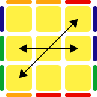
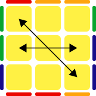
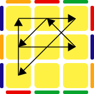

Permutation of the Last Layer переводится как перестановка в последнем слое, то есть как из желтой шапки за один алгоритм получить собранный куб. Количество вариантов, которые вам придется выучить = 21.
Для каждого случая может быть более чем один вариант решения, либо не один вариант начального расположения кубика.
На всех рисунках изображен вид сверху, т.е. как мы видим желтую сторону сверху. Нижняя часть рисунка соответствует фронтальной стороне, верхняя - задней.
Чтобы у тех, кто только начинает учить ПЛЛ, не разбегались глаза (конечно, все эти случаи для каждого алгоритма учить не надо), мы выделили жирным самые популярные и используемые в скоростной сборке случаи. Для тех, кто не хочет заморачиваться, а выучить просто 21 алгоритм ПЛЛ, учите алгоритмы, выделенные жирным. А впоследствии Вы, может быть, начнете разбирать случаи с других сторон, другие выполнения и т.д.
Буква T (T-perm)
R U R' U' R' F R2 U' R' U' R U R' F'
(Dw2) R U R' U' R' F R2 U' R' U F' L' U L
Очень хорошая и быстрая формула, учите первый вариант и точно не ошибетесь)
Копьё (Y-perm)
F R U' R' U' R U R' F' R U R' U' R' F R F'
F R' F R2 U' R' U' R U R' F' R U R' U' F'
Старайтесь выполнять последнее движение в этой формуле (F') большим пальцем правой руки.
Треугольники сторон (U-perms)
R U' R U R U R U' R' U' R2
M2 U M U2 M' U M2
U2 R U R' U R' U' R2 U' R' U R' U R
y2 R2 U' R' U' R U R U R U' R
Выполняется перестановка трех ребер против часовой стрелки, можно так же выполнять через M слой или доучить с других сторон
R2' U R U R' U' R3 U' R' U R'
R2 U R U R' U' R' U' R' U R'
M2 U' M U2 M' U' M2
y2 R' U R' U' R' U' R' U R U R2
y2 M2 U' M' U2 M U' M2
В первом варианте используется специальное движение R3 для скорости, выполняется следующим образом R2 вы делаете обычно, а остальное движение (R) докручиваете указательным, отпуская большой. Если не получится натренировать первую, то без проблем можете брать вторую формулу.
Крест сторон (H-perm)
M2 U' M2 U2' M2 U' M2
M2 U M2 U2 M2 U M2
Важно для скорости выполнять M2 двумя разными пальцами, сначала может будет чуть неудобно, но потом очень быстро будет идти алгоритм. Если вам удобно делать M2 правой рукой, тогда первая формула, если левой, то вторая.
Саночки (Z-perm)
y/y' M2 U' M2 U' M' U2' M2 U2' M' U2
M2 U M2 U M' U2 M2 U2 M'
U' M' U M2 U M2 U M' U2 M2
U2 M' U2 M2 U2 M' U' M2 U' M2
M2' U2 M' U' M2' U' M2' U' M' U
Не забывайте выполнять M2 двумя разными пальцами. Если вам удобно делать M2 правой рукой, тогда первая формула, если левой, то вторая.
Треугольники углов (A-perms)
Lw' U R' D2 R U' R' D2 R2
y x' R2 D2 R' U' R D2 R' U R'
y' Rw L D2 L' U' L D2 L' U L'
y' x' U' R U' L2 U R' U' L2 U
Для скорости движение D2 выполняется двумя разными пальцами последовательно. Например, безымянный, а потом мизинец
x R2 D2 R U R' D2 R U' R
y Lw U' R D2 R' U R D2 R2
y' Rw U' L D2 L' U L D2 L2
Формула очень напоминает предыдущую, только здесь углы переставляются против часовой стрелки. Так же рекомендуем движение D2 выполнять двумя разными пальцами последовательно
Лямбды (J-perms)
R U R' F' R U R' U' R' F R2 U' R' U'
R U2 R' U' R U2 L' U R' U' L
y R U' L U2 R' U R U2 R' L' U
y2 R' z R U R' D R2 U' R U R2 U'
Простая и быстрая формула
R' U2' R U R' z R2 U R' D R U'
U' R' U L' U2 R U' R' U2 R L
L U' R' U L' U2 R U' R' U2 R
x U2 Rw' U' Rw U2 Lw' U R' U' R2
Несмотря на то что есть перехват, формула очень быстрая
Параллельный перенос (F-perm)
R' U' F' R U R' U' R' F R2 U' R' U' R U R' U R
U' R' U R U' R2 F' U' F U R F R' F' R2
y R' U2 R' U' y R' F' R2 U' R' U R' F R U' F
y' R' U R U' R2' F' U' F U R U' Lw R U' R' U
Старайтесь не делать лишних перехватов
Летающая тарелка (V-perm)
R' U R' U' y R' F' R2 U' R' U R' F R F
R' U2 R U2 L U' R' U L' U L U' R U L'
y F' U F' U' R' F' R2 U' R' U R' F R F
Семерки (R-perms)
y R U R' F' R U2 R' U2 R' F R U R U2 R'
y R U' R' U' R U R D R' U' R D' R' U2 R'
L U2 L' U2 L F' L' U' L U L F L2
Если у вас быстро идут формулы через D, то можете попробовать второй вариант
R' U2' R U2' R' F R U R' U' R' F' R2
R' U2 R' D' R U' R' D R U R U' R' U' R
y R2 F R U R U' R' F' R U2' R' U2' R
Если у вас быстро идут формулы через D, то можете попробовать второй вариант. Не забывайте двойные движения выполнять разными пальцами.
Терминатор (E-perm)
x' R U' R' D R U R' D' R U R' D R U' R' D'
R' U' R' D' R U' R' D R U R' D' R U R' D R2
R' U2 R' D' R U R' D R U' R' D' R U2 R' D R2
Этот алгоритм для терминатора используют все ведущие спидкуберы мира. Сложность состоит только в ходах D', чтобы было быстро, этот ход нужно выполнять толкающим движением левого безымянного пальца.
Совет: учите формулы постепенно. Возьмите несколько штук и пробуйте их реализовать. Не учите сразу все варианты, а попробуйте выбрать для себя один оптимальный, который вам будет делать легче всего.
Буквы X (N-perms)

R U R' U R U R' F' R U R' U' R' F R2 U' R' U2 R U' R'
z R U R' D R2 U' R D' U R' D R2 U' R D'
R U' R' U Lw U F U' R' F' R U' R U Lw' U R'
R U R' U' L U2 L' U' L U2 R' U L' U' R U R U' R'
Формула длинная, но очень легко можно запомнить так: начало с рыбки (R U R' U) дальше Лямбда R U R' F' R U R' U' R' F R2 U' R' дальше мы делаем U2 и загоняем пару R U' R'

R' U R U' R' F' U' F R U R' F R' F' R U' R
R' U R' F R F' R U' R' F' U F R U R' U' R
R' U L' U2 R U' R' L U L' U2 R U' L U
L' U R' z R2 U R' U' D R D' R2 U R' z' R
Сложная формула, но у вас все получится
Восьмерки (G-perms)
R2' F2 R U2 R U2' R' F R U R' U' R' F R2
y2 R2' Uw' R U' R U R' Uw R2 B U' B'
y2 R2 U' R U' R U R' U R2 D' U R U' R' D U'
y2 D R2 U' R U' R U R' U R2 D' U R U' R' U'R2' F' R U R U' R' F' R U2' R' U2' R' F2 R2
y' R U R' y' R2 Uw' R U' R' U R' Uw R2
y' R U R' U' D R2 U' R U' R' U R' U R2 U D'
y2 Fw R Fw' R2 Uw' R U' R' U R' Uw R2
R2 Uw R' U R' U' R Uw' R2 y' R' U R
L2 F2 L' U2 L' U2 L F' L' U' L U L F' L2
y' U D' R2 U R' U R' U' R U' R2 D U' R' U R
Несмотря на перехват, формула достаточно быстрая и легкая
F' U' F R2 Uw R' U R U' R Uw' R2'
U' D R' U' R U D' R2 U R' U R U' R U' R2
y' R' Dw' F R2 Uw R' U R U' R Uw' R2'

/OBO-BYYYG-OYYYR-BYYYG-RGR.svg) y/y' M2 U' M2 U' M' U2' M2 U2' M' U2
M2 U M2 U M' U2 M2 U2 M'
U' M' U M2 U M2 U M' U2 M2
U2 M' U2 M2 U2 M' U' M2 U' M2
M2' U2 M' U' M2' U' M2' U' M' U
Не забывайте выполнять M2 двумя разными пальцами. Если вам удобно делать M2 правой рукой, тогда первая формула, если левой, то вторая.
y/y' M2 U' M2 U' M' U2' M2 U2' M' U2
M2 U M2 U M' U2 M2 U2 M'
U' M' U M2 U M2 U M' U2 M2
U2 M' U2 M2 U2 M' U' M2 U' M2
M2' U2 M' U' M2' U' M2' U' M' U
Не забывайте выполнять M2 двумя разными пальцами. Если вам удобно делать M2 правой рукой, тогда первая формула, если левой, то вторая.